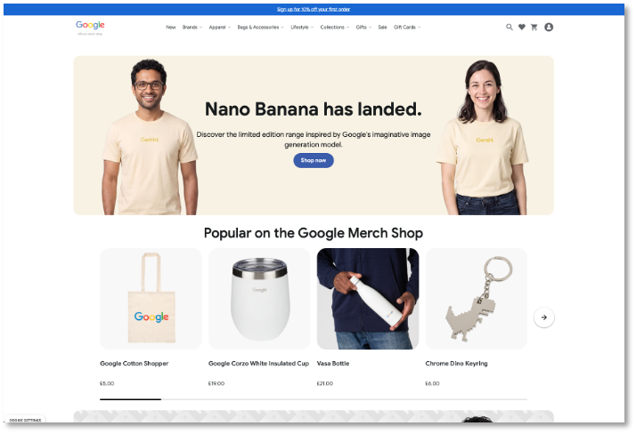
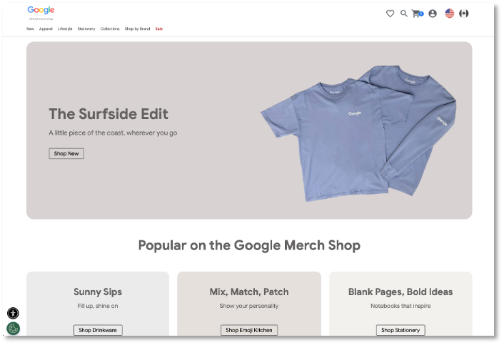

GA4-Report · Google Merchandise Store
Einleitung
Die Analyse folgt vier aufeinander aufbauenden Schritten — von der Akquisition neuer Nutzer bis zum Transfer der Erkenntnisse auf die Qseidon GmbH.
Akquisition
Woher kommen die Nutzer?
Navigation
Wie bewegen sich Nutzer auf der Webseite?
Engagement
Wie intensiv nutzen sie die Webseite?
Transfer
Was bedeutet das für Qseidon?

EU-Store

US-Store
| Nr. & Titel | Frage | Dimensionen & Metriken |
|---|---|---|
| FF1 Akquisition & Wert |
Welchen Beitrag leisten die verschiedenen Akquisitionskanäle zur Gewinnung neuer Nutzer, und wie unterscheiden sie sich hinsichtlich des erzeugten wirtschaftlichen Wertes? | Dimension: First User Channel Group Metriken: Nutzer, Käufe, Umsatz, Key Event Rate |
| FF2 Engagement |
Wie unterscheiden sich die Trafficquellen hinsichtlich Engagement und Absprungrate, und welche Kanäle führen zu einer besonders intensiven Seitennutzung? | Dimension: Session Channel Group Metriken: Engagement Rate, Bounce Rate, Zeit, Events, Views |
| FF3 Navigation |
Wie unterscheiden sich die Einstiegsseiten und Navigationspfade der Nutzer in Abhängigkeit von der Traffic-Quelle? | Dimension: Sessionsegmente und Pfadexploration Metriken: Landingpages, Seitenpfade, Total Users |
Analyse
Anteil an neuen Nutzern nach Erstakquisitionskanal
Neue Nutzer je Kanal, absolut und in Prozent. Die vier größten Kanäle einzeln, der Rest als „Sonstige" zusammengefasst (Aufschlüsselung: Tabelle 4 im Datenbasis-Tab). Quelle: Tabelle 4 (Summe: 233.126 neue Nutzer).
Umsatz je Erstakquisitionskanal
In US-$, absteigend sortiert. Quelle: Tabelle 4.
Fazit
Hohe Reichweite bedeutet nicht zwangsläufig hohe Nutzerqualität.
Reichweite und Nutzungsintensität nach Akquisitionskanal
GA4-Sitzungsdaten des Google Merchandise Store, Quelle: Abbildung 17). Nutzungsintensität = Engagement Rate im Verhältnis zum Gesamtwert (37,2 %). Ein Kanal gilt als nutzungsintensiv, wenn seine Engagement Rate über 37,2 % liegt und mindestens 2 von 3 Kennzahlen (Engagement-Zeit > 42 Sek., Events/Sitzung > 11,35, Views/Sitzung > 3,02) über dem Gesamtdurchschnitt liegen; hohe Reichweite ab ≥ 5 % aller Sitzungen. Punktgröße = Anzahl der Sitzungen. Kanäle mit weniger als 100 Sitzungen sowie Unassigned wurden nicht eingeordnet; Email bleibt wegen geringer Fallzahl unberücksichtigt.
Fazit
Direct bleibt der Kanal mit der höchsten Reichweite und liefert im Verhältnis die meisten Sitzungen. Nutzer beschäftigen sich jedoch weniger intensiv mit der Seite. Kanäle wie z. B. Organic Shopping oder Cross-Network dominieren klar die Nutzungsintensität.
Ob Nutzer über den Direct Kanal nur sehr gezielt mit der Seite interagieren und andere Kanäle zum Stöbern führen, kann nur vermutet werden.
Abschluss
Direct liefert das größte Volumen und den höchsten absoluten Umsatz, weist aber eine geringere Nutzungsintensität auf.
Organic Search verbindet relevante Reichweite, höheres Engagement und häufigere Einstiege auf konkrete Unterseiten.
Nutzer orientieren sich überwiegend über Kategorien, Themen- und Markenbereiche. Die interne Suche ist als unmittelbarer Folgeschritt weniger dominant.
Fazit
Gute Auffindbarkeit ist der beste Hebel für qualifizierte Einstiege. Danach entscheidet aber eine klare Seitenstruktur, ob daraus Engagement oder Leads entstehen.
Diese Karteikarte enthält die zugrundeliegenden GA4-Tabellen unaufbereitet, ohne Interpretation — als Referenz zum Management-Bericht.
Quelle: eigene Aufstellung
| Property | Google Merchandise Store |
|---|---|
| Untersuchungszeitraum | 01.04.2026 bis 30.06.2026 |
| Untersuchte Dimensionen | Session primary channel group (Default channel group), First user primary channel group (Default channel group) |
| Untersuchte Metriken | Engaged sessions, Sessions, Engagement rate, Bounce rate, Average engagement time per session, Events per session, Views per session, New users, User key event rate, Total revenue, Purchases |
Quelle: Daten der explorativen Analyse in GA4, eigene Berechnung der Prozentwerte
| Kanal | Neue Nutzer | Anteil | User Key Event Rate | Umsatz | Käufe |
|---|---|---|---|---|---|
| Direct | 175.594 | 74,45 % | 11,0 % | 385.888,05 $ | 2.445 |
| Organic Search | 36.461 | 15,46 % | 40,5 % | 68.835,66 $ | 375 |
| Cross-network | 9.246 | 3,92 % | 58,0 % | 53.163,75 $ | 383 |
| Paid Search | 6.996 | 2,97 % | 47,7 % | 16.449,65 $ | 73 |
| Referral | 2.273 | 0,96 % | 38,9 % | 27.750,80 $ | 127 |
| Organic Social | 2.068 | 0,88 % | 67,2 % | 5.407,18 $ | 45 |
| Organic Shopping | 408 | 0,17 % | 90,1 % | 1.315,45 $ | 20 |
| 55 | 0,02 % | 65,3 % | 2.960,16 $ | 24 | |
| Organic Video | 25 | 0,01 % | 19,2 % | 100,94 $ | 1 |
| Gesamt | 233.126 | 100 % | — | 561.871,64 $ | 3.493 |
Quelle: eigene Berechnung aus den GA4-Eventdaten (Abb. 14)
| First User Channel | View → Cart | Cart → Purchase | View → Purchase | Views für 10 Käufe |
|---|---|---|---|---|
| Direct | 17,4 % | 10,7 % | 1,9 % | 526,31 |
| Organic Search | 13,3 % | 5,9 % | 0,8 % | 1.250 |
| Cross-network | 16,2 % | 9,2 % | 1,5 % | 666,66 |
| Referral | 16,6 % | 8,0 % | 1,3 % | 769,23 |
| Paid Search | 19,8 % | 4,0 % | 0,8 % | 1.250 |
| Organic Social | 12,9 % | 10,1 % | 1,3 % | 769,23 |
| Organic Shopping | 17,0 % | 10,5 % | 1,8 % | 555,56 |
| 21,9 % | 7,7 % | 1,7 % | 588,23 |
Quelle: GA4, explorative Analyse des Google Merchandise Store
| Kanal | Sessions | Engaged Sessions | Engagement Rate | Bounce Rate | Ø Engagement-Zeit | Events / Session | Views / Session |
|---|---|---|---|---|---|---|---|
| Direct | 210.467 | 51.386 | 24,4 % | 75,6 % | 0:32 Min. | 8,84 | 2,51 |
| Organic Search | 62.955 | 42.567 | 67,6 % | 32,4 % | 1:00 Min. | 15,00 | 4,04 |
| Unassigned | 19.909 | 1.648 | 8,3 % | 91,7 % | 0:51 Min. | 22,28 | 3,45 |
| Cross-network | 12.918 | 10.749 | 83,2 % | 16,8 % | 1:41 Min. | 23,66 | 6,54 |
| Paid Search | 12.477 | 8.612 | 69,0 % | 31,0 % | 1:05 Min. | 15,94 | 4,39 |
| Referral | 6.524 | 4.790 | 73,4 % | 26,6 % | 1:39 Min. | 22,98 | 6,37 |
| Organic Social | 3.362 | 2.611 | 77,7 % | 22,3 % | 0:48 Min. | 13,52 | 3,65 |
| Organic Shopping | 689 | 587 | 85,2 % | 14,8 % | 1:11 Min. | 16,30 | 4,57 |
| 398 | 299 | 75,1 % | 24,9 % | 1:47 Min. | 22,89 | 6,28 | |
| Organic Video | 74 | 46 | 62,2 % | 37,8 % | 2:24 Min. | 27,35 | 7,74 |
| Gesamt | 326.768 | 122.857 | 37,6 % | 62,4 % | 0:45 Min. | 12,15 | 3,22 |
Quelle: eigene Analyse aus den vorhergehenden Datenanalysen
| Kanal | Typisches Einstiegsmuster |
|---|---|
| Direct | Vor allem Startseite; daneben einzelne tiefere Seiten, etwa durch Bookmarks, Browserhistorie oder nicht getaggte Weiterleitungen. |
| Organic Search | Startseite sowie deutlich häufiger thematisch konkrete Kategorie-, Marken- und Lifestyle-Seiten; schnellerer Wechsel zu Produktseiten. |
Quelle: eigene Zusammenfassung der Ergebnisse aus GA4
| Erkenntnis aus dem Merchandise Store | Übertragung auf Qseidon |
|---|---|
| Organic Search verbindet Reichweite und Qualität | Eigenständige, suchmaschinenoptimierte Landingpages für Cyber Security, Machine Learning und Quantum Computing. |
| Viele Nutzer steigen tief in Websites ein | Jede Leistungs- und Themenseite muss ohne vorherigen Startseitenbesuch verständlich sein und einen klaren nächsten Schritt anbieten. |
| Navigation prägt den weiteren Weg | Informationsarchitektur nach Leistungen, Problemen, Lösungen oder Zielgruppen strukturieren. |
| Direct und Unassigned sind analytisch unscharf | Kampagnenlinks konsequent mit UTM-Parametern versehen, Trackingregeln dokumentieren. |
| Wirtschaftlicher Wert muss über Ziele messbar werden | Kontaktformular, Demo-Anfrage, Terminbuchung, Download und qualifizierte Lead-Übergabe als Key Events definieren. |
Quelle: GA4 explorative Analyse. Seitentiefe: „/“ und „(not set)“ = 0, je weiteres Pfadsegment +1. Top 10 nach Sessions, /shop-Unterseiten nach Kategorie gruppiert (analog Abbildung 20) — hier hat jede Kategorie nur eine Unterseite.
| Landingpage | Seitentiefe | Sessions |
|---|---|---|
| / | 0 | 172.016 |
| (not set) | 0 | 44.002 |
| Family-day Kategorie | — | 5.529 |
| /shop/family-day | 2 | 5.529 |
| New Kategorie | — | 4.054 |
| /shop/new | 2 | 4.054 |
| Collections Kategorie | — | 986 |
| /shop/collections/emoji | 3 | 986 |
| /checkout | 1 | 941 |
| Apparel Kategorie | — | 933 |
| /shop/apparel/mens | 3 | 933 |
| /account | 1 | 853 |
| /canada | 1 | 842 |
| Clearance Kategorie | — | 756 |
| /shop/clearance | 2 | 756 |
Quelle: GA4 explorative Analyse. Seitentiefe: „/“ und „(not set)“ = 0, je weiteres Pfadsegment +1. Top 10 nach Sessions, mehrfach auftretende Kategorien (Lifestyle, Apparel, Shop by Brand) aggregiert mit Detailseiten darunter.
| Landingpage | Seitentiefe | Sessions |
|---|---|---|
| (not set) | 0 | 33.935 |
| / | 0 | 26.030 |
| Lifestyle Kategorie | — | 5.274 |
| /shop/lifestyle/bags | 3 | 3.672 |
| /shop/lifestyle/drinkware | 3 | 1.602 |
| Apparel Kategorie | — | 3.471 |
| /shop/apparel | 2 | 1.863 |
| /shop/apparel/mens | 3 | 805 |
| /shop/apparel/headgear | 3 | 803 |
| Shop by Brand Kategorie | — | 2.849 |
| /shop/shop-by-brand/youtube | 3 | 1.815 |
| /shop/shop-by-brand/android | 3 | 1.034 |
| /shop/new | 2 | 1.316 |
Aggregiert aus den Landingpage-Sessions in Abbildung 19 (Direct) und Abbildung 20 (Organic Search) je Seitentiefe. Kategorie-Sammelzeilen werden nicht mitgezählt, da ihre Sessions bereits in den Detailzeilen enthalten sind.
| Seitentiefe | Direct | Organic Search |
|---|---|---|
| 0 | 216.018 | 59.965 |
| 1 | 2.636 | 0 |
| 2 | 10.339 | 3.179 |
| 3 | 1.919 | 9.731 |
| Gesamt | 230.912 | 72.875 |